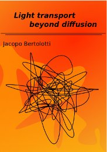
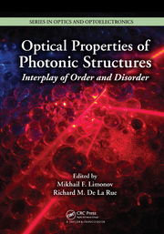

International (refereed) journals
2019
- Tom Vettenburg, Simon A. R. Horsley, and Jacopo Bertolotti, "Calculating coherent light-wave propagation in large heterogeneous media", Opt. Expr. 27, 11946 (2019). (pdf)
- Alba M. Paniagua-Diaz, Ilya Starshynov, Nikos Fayard, Arthur Goetschy, Romain Pierrat, Rémi Carminati, and Jacopo Bertolotti , "Blind Ghost Imaging", Optica 6, 460 (2019). (pdf)
- Michele Gaio, Dhruv Saxena, Jacopo Bertolotti, Dario Pisignano, Andrea Camposeo, and Riccardo Sapienza, "A nanophotonic laser on a graph", Nat. Comm. 10, 226 (2019). (pdf)
- Gianni Jacucci, Olimpia D. Onelli, Antonio De Luca, Jacopo Bertolotti, Riccardo Sapienza and Silvia Vignolini, "Coherent backscattering of light by an anisotropic biological network", Int. Focus 9,20180050 (2018). (pdf)
- Alba M. Paniagua-Diaz, Adrian Ghita, Tom Vettenburg, Nick Stone, and Jacopo Bertolotti, "Enhanced deep detection of Raman scattered light by wavefront shaping", Opt. Expr. 33,33565 (2018). (pdf)
- Emre Yüce, Jin Lian, Sergei Sokolov, Jacopo Bertolotti, Sylvain Combrié, Gaëlle Lehoucq, Alfredo De Rossi, and Allard P. Mosk, "Adaptive Control of Necklace States in a Photonic Crystal Waveguide", ACS Phot. 5,3984 (2018). (pdf)
- Ilya Starshynov, Alba M. Paniagua-Diaz, Nikos Fayard, Arthur Goetschy, Romain Pierrat, Rémi Carminati, and Jacopo Bertolotti, "Non-Gaussian Correlations between Reflected and Transmitted Intensity Patterns Emerging from Opaque Disordered Media", Phys. Rev. X 8,021041 (2018). (pdf)
- Matthias Hofer, Christian Soeller, Sophie Brasselet, and Jacopo Bertolotti, "Wide field fluorescence epi-microscopy behind a scattering medium enabled by speckle correlations", Optics Express 26, 9866 (2018). (pdf)
- Jacopo Bertolotti, "Designing disorder", Nat. Phot. 12, 59 (2018). (pdf)
- Carlota Ruiz de Galarreta, Arseny M. Alexeev, Yat-Yin Au, Martin Lopez-Garcia, Maciej Klemm, Martin Cryan, Jacopo Bertolotti, and C. David Wright, "Nonvolatile reconfigurable phase-change metadevices for beam steering in the near infrared", Adv. Func. Mat. 28, 1704993 (2018). (pdf)
- Wonjun Choi, Cheng Yin, Ian R. Hooper, William L. Barnes, and Jacopo Bertolotti, "Absence of Anderson localization in certain random lattices", Phys. Rev. E 96, 022122 (2017). (pdf)
- D. Akbulut, T. Strudley, J. Bertolotti, E.P.A.M. Bakkers, A. Lagendijk, O.L. Muskens, W.L. Vos, and Allard P. Mosk, "Optical transmission matrix as a probe of the photonic strength", Phys. Rev. A 94, 043817 (2016). (pdf)
- I. Starshinov, J. Bertolotti, J. Anders, "Quantum correlation of light scattered by disordered media", Optics Express 5, 4662 (2016). (pdf)
- J. Bertolotti, "Multiple scattering: Unravelling the tangle", Nature Physics 11, 622 (2015). (pdf)
- S. Schott, J. Bertolotti, J.-F. Léger, L. Bourdieu, S. Gigan, "Characterization of the angular memory effect of scattered light in biological tissues", Optics Express 23, 13505 (2015). (pdf)
- H. Yilmaz, E.G. van Putten, J. Bertolotti, A. Lagendijk, W.L. Vos, A.P. Mosk, "Speckle correlation resolution enhancement of wide-field fluorescence imaging", Optica 2, 424 (2015). (pdf)
- J. Bertolotti, "Non-invasive imaging: Peeking through the curtain", Nature Photonics 8, 751 (2014). (pdf)
- S.A. Goorden, J. Bertolotti, A.P.
Mosk, "Superpixel-based spatial
amplitude and phase modulation using a digital micromirror
device", Optics Express 22,
17999 (2014). (pdf)
- J. Bertolotti, E.G. van Putten, C.
Blum, A. Lagendijk, W.L. Vos, A.P. Mosk, "Non-invasive
imaging through opaque scattering layers", Nature 491, 232 (2012). (pdf)
(Supp.
Info.)
- M. Burresi, V. Radhalakshmi, R. Savo,
J. Bertolotti, K. Vynck, D.S. Wiersma, "Weak
Localization of Light in Superdiffusive Random Systems",
Phys. Rev. Lett. 108,
110604 (2012). (pdf)
- E.G. van Putten, D. Akbulut, J.
Bertolotti, W.L. Vos, A. Lagendijk, A.P. Mosk, "Scattering
lens resolves sub-100 nm structures with visible light",
Phys. Rev. Lett. 106,
193905 (2011). (pdf)
Theses
PhD Thesis|  |
"Light
transport
beyond diffusion", University of Florence (Italy). February 2008. (pdf) |
Master Thesis
"Studio sulla localizzazione della luce in sistemi disordinati unodimensionali", University of Florence (Italy).
April 2004. (pdf)
Book chapters
|  |
K. Vynck, J. Bertolotti, P.
Barthelemy, and D.S. Wiersma, "Superdiffusion
of
light in Lévy glasses" in "Optical
Properties
of Photonic Structures: Interplay of Order and Disorder",
(CRC Press, 2012). |
Contact details :
- Postal address:
University of Exeter
Physics building
Stocker Road
Exeter
EX4 4QL
United Kingdom - E-mail: j.bertolotti@exeter.ac.uk
- Skype: j_bertolotti